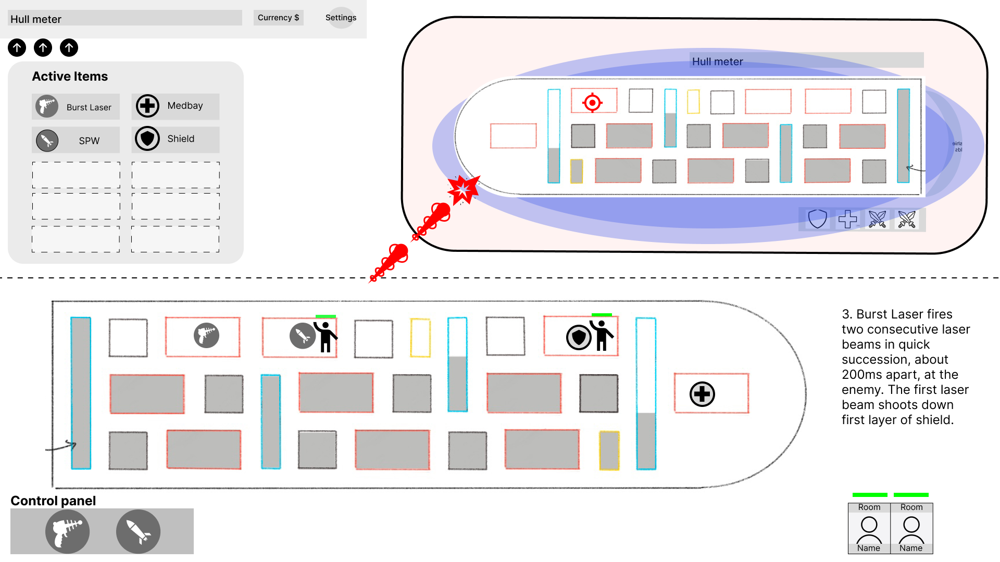
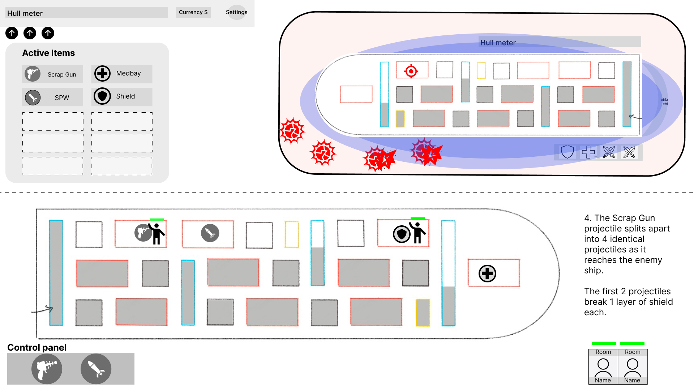

End of Sprint 2 and start of Sprint 3 (10/16/22 to 10/30/22)
Introduction
We finished sprint 2 and the studio is finalizing all features going into Project: Light.
I gave my final feature pitch during our in-person meeting, and working on organization and balancing throughout the week.
Designing with Unity
I started live balancing in Unity during sprint 2 and refreshed my knowledge of using git version control, and most of my tasks going forward
will involve working in Unity. Unfortunately I encountered a game-breaking bug, and later after that was fixed, a misassigned class
that I opted not to touch the night before the meeting, to maintain stability. Thus I have yet to push any specific balance changes
but I am equipped to do so early in sprint 3.
Project: Light's latest stable build seemed to have far fewer bugs during our playtests, although a resounding opinion was that
later encounters prove extremely difficult, an issue of top priority for me.
Upgrade Refactors
The design team previously considered including "upgrades" or an "upgrade button" for certain systems. We ultimately determined
that no such upgrade system should exist. Instead, anything buyable has its own item in the shop, and multiple versions
of the same system can coexist in the ship (such as a default Medbay and Burst Medbay). Passive upgrades, such as for walls/doors/ladders
of the submarine, also show up as "items" in the shop that activate once bought.
This change reduces the amount of new UI/UX needed and standardizes "upgrades" for all items. I also realized that the various Medbay
versions I made during sprint 1 proved to be too many, so the Level 2 and Level 3 Medbays were cut, while the Speedy Medbay
adopted the function of the deprecated Level 2 Medbay. Thankfully these changes did not seem to undo too much of the programming team's work.
Final New Features
For tutorial balancing, two major sore spots appeared during the previous studio-wide playtest:
In Unity, I identified that default crew health was set to 1, so increasing their health would be an easy fix. However, enemy crew in fact lacked any crew class (such as Grunt or Medic) and were "blank" crew members. I could not edit the parameters of the crew class as easily so I held off on it for next week.
As for Weapon 2, I realized that all Non-Shield Piercing (NSP) weapons only shot 1 projectile. In other words, they were totally ineffective against active shields. Their viability against shields was questionable, so I opted to refactor Weapon 2 and Weapon 3, NSP weapons very similar to each other.


Weapon 2 became the Burst Laser, and Weapon 3 the Scrap Gun (inspired by the Burst Laser and Flak Gun in FTL, respectively). Both weapons remain NSP, but fire multiple projectiles and offer deeper interaction with enemy shields. Though the Scrap Gun may prove better on average, it has some shotgun-like spread and can randomly hit rooms adjacent to the intended target. Both weapons will usually break enemy shields completely, and sometimes deal chip damage as well. These weapons should make NSP weapons a consideration for players once again.
The final new weapon I created was the Anti-Personnel Beam, a very simple "alternate version" of the Laser Beam. The Anti-Personnel Beam functions exactly the same way and outputs high damage, but can only damage crew members at all.
Approximate hours breakdown:
- design mockups and documentation for new weapons
- in-person work sessions
- feature pitch slides and preparation